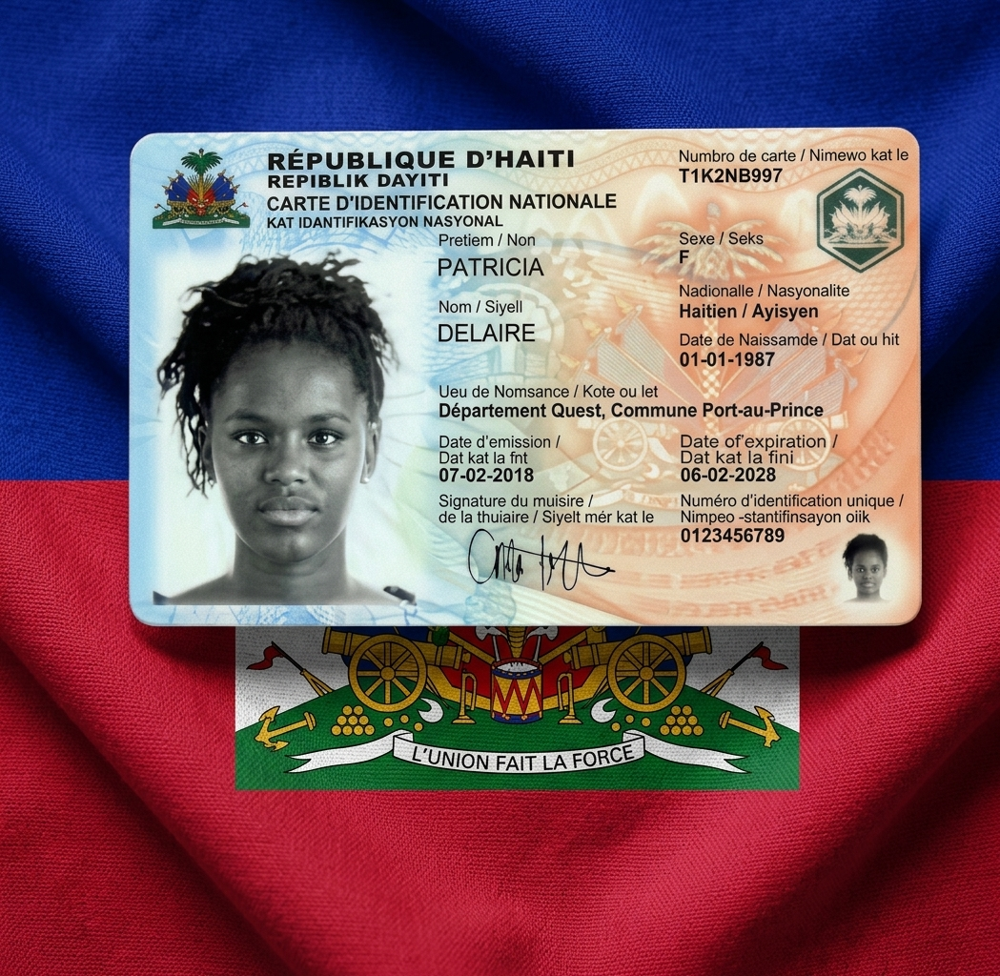

Guide de démarche
Obtenir votre carte d'identification nationale
Préparez votre demande de CIN avec les informations essentielles avant votre visite.
Carte d'Identification Nationale
La CIN est un document officiel d'identification. Anticipez votre démarche en préparant les informations et pièces demandées.

Comment obtenir une CIN ?
Avant de commencer, vérifiez les conditions exigées et préparez les documents requis par le service compétent.
Les étapes à suivre
- Préparer vos documents d'identification.
- Réunir les documents d'état civil nécessaires.
- Remplir le formulaire de demande.
- Vous présenter auprès du service compétent.
- Fournir les informations biométriques demandées.